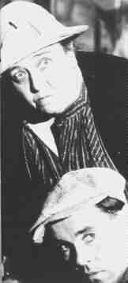
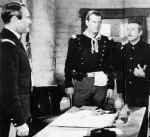

Interview with a Dead Director Page 4 "When was the last time you saw The Grapes of Wrath," I asked
the director. "Anytime I want. It's all up here. Every frame. Every syllable. Right
up here," he said, tapping the top of his head. "Prerogative of my state of
being, you might say."  Fonda and Darwell in Grapes of Wrath I told him that after seeing his magnificent Welsh depiction of family, hardship and the strength of man, I couldn't help wanting to see his look at America in the throes of similar circumstances. The laser disc of "Grapes" didn't look nearly as good as "Valley." Much of the exemplary lighting techniques of cinematographer Greg Tolland lost the impact the original film must have had. Ford was dismayed at my observation concerning the condition of the transfer print of The Grapes of Wrath. "Sad. Tolland shot that so beautifully. had a lot of dark scenes lit by candles or kerosene lamps. We lit the faces with a luminescence that almost lent them an ethereal quality. Very special. I don't understand it at all how an industry could fail to protect the gold pile it built up. It wouldn't have happened had they had these laser things, I'll tell you. They would have had the money machine putting movies on your shiny discs and they'd be perfect forever." 1 Since the subject of lighting came up, I mentioned to Ford that although he worked with a lot of different cameramen, there is still a sense of unity to the look of many of his films. "MacDonald was simply fantastic on My Darling Clementine," Ford enthused. " Is that on laser? How's it look?" He was pleased when I advised him how splendidly it fared on the rainbow disc."Just because you make the ultimate decisions, it doesn't mean you don't take advantage of the talent you're lucky enough to group around you. Tolland gave me great work on The Long Voyage Home. Stunning high key photography. Mind you, it was what I wanted. "Maybe my films have that look because I didn't move the camera
more than I had to. Take a look at the last few set-ups in The Searchers. Winton Hoch did
a majestic job of shooting that film for me. You got crazy old Mose Harper rocking on the
porch. That was a great role for Hank Worden. I think he made seven or eight movies with
me. The camera's still. The movement comes from him. Next there's a shot from the
perspective of the house. Ethan Edwards is carrying Debbie, delivering her to Martha and
Aaron. Again, the camera is stationery as Edwards approaches. He reaches the porch, puts
her down, Debbie embraces her mother and then I pull the camera back slowly framing the
doorway in a black border. Still the same shot. Almost all the movement is generated by
the characters. Edwards turns and walks off to loneliness. The only reason for the camera
movement was to avoid another set-up and create a new frame without breaking the power of
the emotions."  Fonda and Wayne in Fort Apache Ford was getting fidgety. The frequency of gulps continued to increase. Still, the glass maintained its level. I sensed frustration from Ford. I pressed on and asked about fellow directors that he admired. "I like Raoul Walsh a lot, probably because he wore an eye patch. You can't ignore Griffith. Everyone owes a debt to him. Bill Wellman knew where to put the camera. Yeah, and Capra. He was a great story teller. Had a heart. He had his fingers on the pulse beat of his audience too and don't short change that ability. Hawks too. You gotta count Hawks in there." Contemporary cinema was another matter. "There is too damn much gratuitous violence. The more blood, the more box office and there are talented guys out there succumbing to the basest instincts. Don't get me wrong. The last thing I believe in is censorship. I just hate to see the quality of story telling go downhill. And all these camera cuties. You got something to say by using the camera in a distinctive way, fine. But when it strutting like a peacock in heat, you take away from the story. Most times, with the camera certainly, less is more. "Listen, kid. I can't seem to empty this glass, I can't seem to get drunk, and there are a few other things I can't do anymore. And if I stay here much longer with I might just go nuts. I'm out of here. Lasers, huh." Before I had a chance to utter another breath, there was no Ford, the big screen wasn't in front of me and the covers on my bed were draped halfway on me and halfway on the floor as a sliver of light streamed in through the window across my eyes forcing me to blink awake.
|